Introduction to the Particle Editor
If you’ve ever poked around in the DataBase View tool, you may have seen the old particle effects stored there. You can drag them into your level, trigger them, or create and edit them directly in the DataBase View. These were our first generation particle effects, and while you can continue to use them, we're going to work with CRYENGINE's second generation Particle Editor.
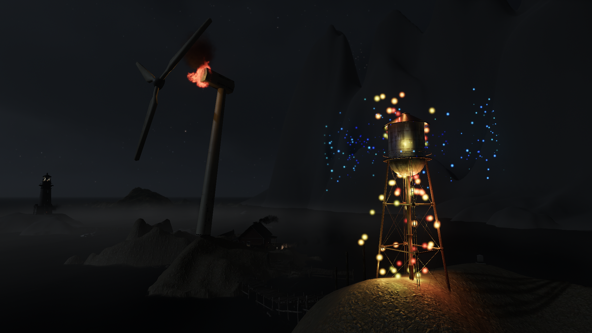
Particle effects created with the second generation Particle Editor
We will discuss the main concepts of particle creation in this first tutorial. Once we understand those, we’ll be on our way to making all sorts of increasingly complex particle effects over the course of this series.
You can begin by right-clicking in the Asset Browser and adding a new particle entity to any folder you like, but opening the Particle Editor tool and creating your first particle in its Asset Browser is what we recommend. Give it a descriptive name to make it easy to find amongst the other particles you’ll create. Once you have your particle created, you can just drag it from the Particle Editor’s Asset Browser into your level. That creates an instance of the particle effect as an entity with one Entity Component, the Particle Emitter.
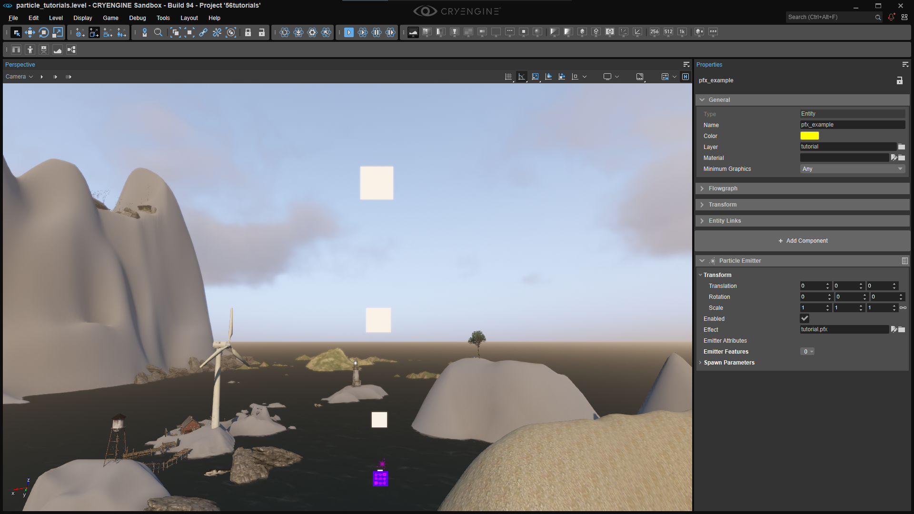
Particle effect entity with Properties panel
Alternatively you can use the Create Object Tool → Components → Effects → Effect Component to create an entity with a Particle Emitter component, but you’ll then need to actually assign a particle effect to it by clicking on the Effect property, which simply takes more steps to accomplish the same end result.
For now, the only thing we care about in the Properties panel is that the particle emitter is enabled so we don’t have to trigger it to see what it’s doing.
The Default Sprite
After the particle effect is dragged into the level, where like any other entity it will automatically snap to the terrain, pull it up out of the terrain by using the Move tool so you can take a better look at it. You’ll immediately see a little rectangle which is the default sprite. A sprite is a simple 2D plane that can have color or movement, emit light, collide with surfaces and objects etc. However, unless it’s very simple and very small, we usually replace the default plane with an image - either a simple image or 2D animated image sequences, such as bugs flapping their wings, curling smoke, flames, etcetera.
To get you started, some of the essential particle effects are provided in the assets\particles folder, including 3D simulations.
The particles folder is only available if the GameSDK Sample Project is downloaded and added to the current project folder. Please see the Asset Database for more information.
If you click on the particle in the Particle Editor's Asset Browser, you’ll see how it’s built in the Effect Graph. The box shaped container shown in the image below is called a Component, and each element in this Component is called a Feature. In the default Component, the Feature Render:Sprites is what’s responsible for actually generating that rectangle which is our current particle. Sprites are just one type of entities you can spawn in a particle, but this is the one you’ll probably use more than any other. 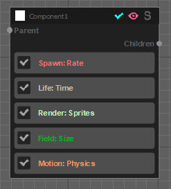
A Component and its Features
As you’ll see, particles can get very, very complicated, with many Components, Features, and Modifiers to dynamically trigger Components and change values during the life of the particle.
We will explain these elements further in this tutorial; but for now, let's take a look at the Particle Editor interface.
The Particle Editor Interface
If you click on a Component’s title bar or any of its Features in the Effect Graph panel, you’ll see its properties in the Inspector panel.
Another panel that is available in the Particle Editor is the Curve Editor, which you use to modify how properties change over time or relative to other parameters, just like the Curve Editor in the Environment Editor.
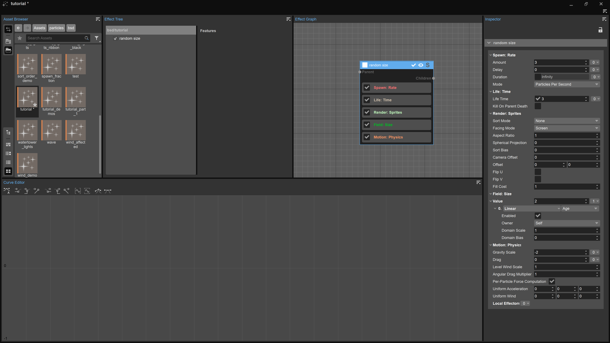
A simple effect and the Particle Editor interface, with all five of its panels open
If you click on a specific Feature, you’ll just see its properties in the Inspector panel; or if you click on the Component’s title bar, you’ll see the properties for the Component itself and every single Feature it has in a long list, which is a nice way to see the whole Component design at once.
Your scroll wheel zooms in and out on the Effect Graph, and you can drag the graph around by right-clicking on an empty area and dragging.
These are the basics and even though the interface is very easy to use, what you can build with it is limitless.
All panels can be opened or closed by clicking the 
For more information on the Particle Editor interface, please see the Particle Editor page.
Facing Mode
If you rotate the camera around the sprite, you’ll notice that by default, the rectangle always faces the screen. While you can change this behavior, the point of it is to help a 2D image pretend to be 3D simply by hiding the fact that it has no volume or thickness. That’s pretty much the essence of how particles work.
To illustrate that, if you click on the Render:Sprites Feature, you’ll see its properties in the Inspector panel. The Facing Mode property is what determines how this 2D plane is displayed. The default is Screen, meaning the sprite rectangle's edges are always parallel to the screen, but if we set it to Free mode, it's even easier to see it for what it really is: just a 2D plane, because the sprites are always parallel to the rotation of the entity and do not rotate as the camera moves. Another option is Camera, which makes the sprites always parallel to the camera rotation.
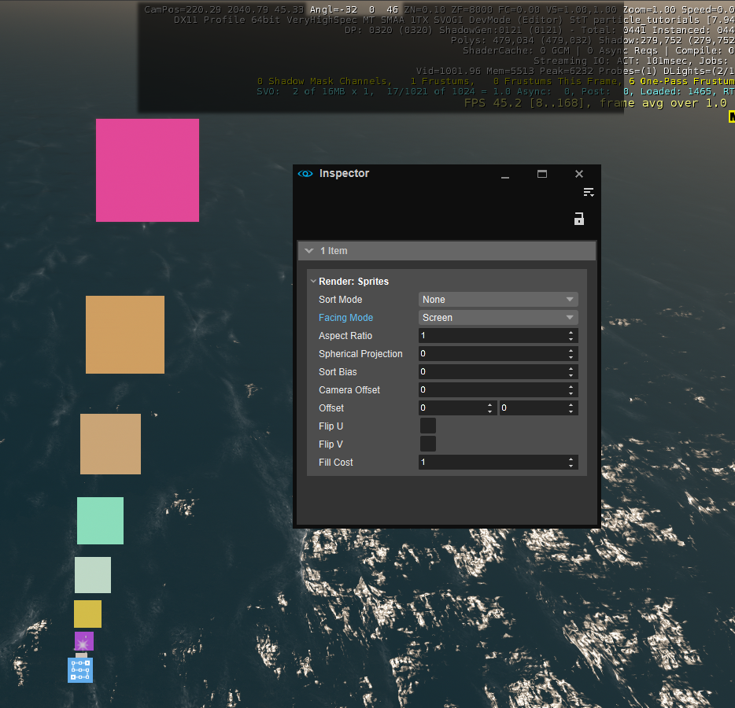 | 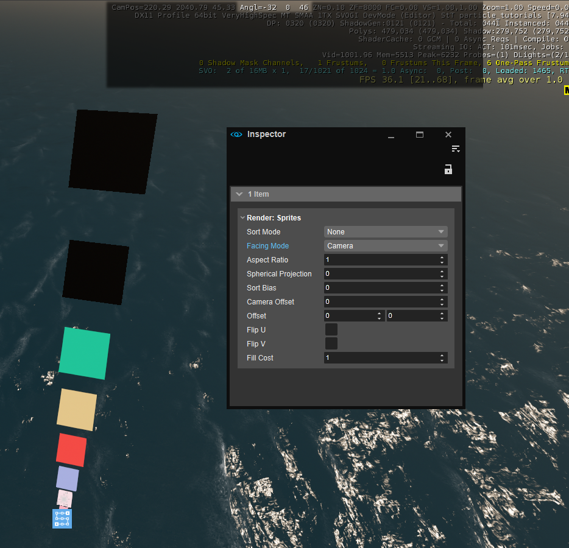 | 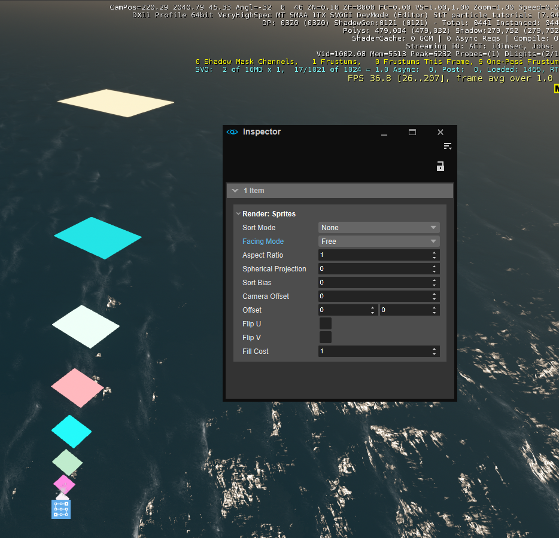 |
| Facing Mode set to Screen: sprites are always parallel to the screen | Facing Mode set to Camera: sprites are always parallel to the camera (not the camera rotations on X and Z in the Display Info) | Facing Mode set to Free: sprites are always parallel to the entity's rotation |
The reason it's most common to use Screen mode is that the basis of particle effects is to use 2D images to simulate 3D effects, and Screen mode hides the fact that the sprites have no thickness. Hopefully, that clarifies why you’ll usually want the sprite to face the screen. We’ll explore the remaining facing modes later. For now, let's reset this to always face the screen.
Just like in the Material Editor, the Audio Controls Editor and other tools, you have to save your particle entity while the Particle Editor is the active window.
Throughout the Sandbox Editor interface, when you have unsaved changes to an entity, you’ll see an asterisk on its icon and name to alert you that you haven’t saved it yet. You can use the File → Save option in the
If you’re new to the Sandbox Editor, it's worth knowing that any instance of a particle, a mesh. a material or anything else is updated live when you make changes to it in its respective editor.
Field:Size
The Field:Size Feature sets the size of the sprite. The default value of one actually makes it two by two meters, because it’s the radius to the edge of the sprite, not to a corner vertex.
You can make these sprites as tiny or as big as you like.
Spawn:Rate and Life:Time
Next, we need to control when our sprite appears by “spawning” it.
The Spawn:Rate Feature is useful when you want sprites to appear in a continuous stream. Right now, a new sprite is being spawned once every second, but because the old one never disappears, you can’t actually see that new ones are appearing.
But here’s an interesting thing: if you drag the effect around with the Move tool, you’ll notice that it "lags" in a weird way, almost like it keeps getting stuck on something. But it’s actually because a new sprite is in fact being spawned only once per second, and because we haven’t explicitly set up the sprite to follow the movement of the Entity Component.
To make this spawning and disappearing visible, we can modify how long the sprite lasts through the Life:Time Feature. Set the Life Time property to 0.5 (half a second), and now we finally start to see something a bit more interesting, which is a new sprite appearing every second and disappearing half a second later.
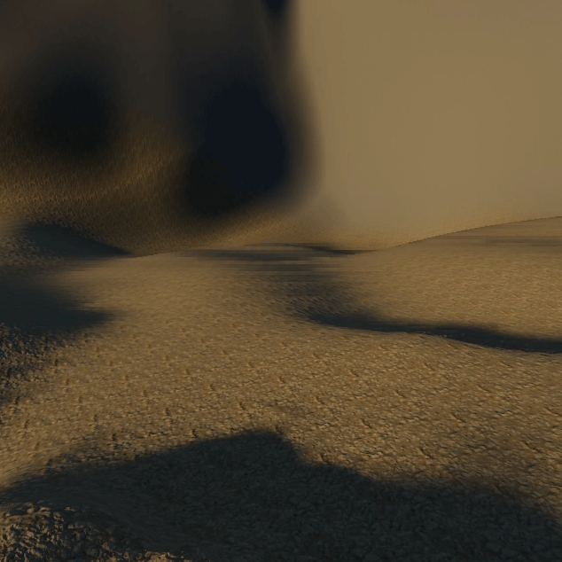 | 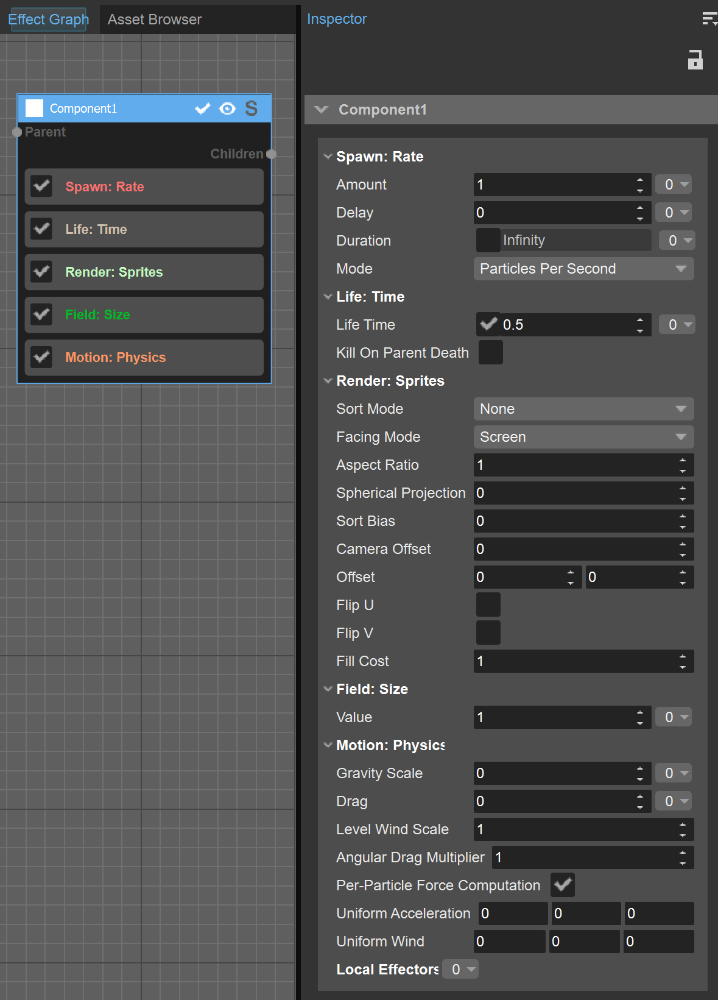 |
| Life Time = 0.5 | |
Adding Movement
There are many ways to get a particle to move, but as we already have a Motion:Physics Feature in our Component, we'll set the Life Time property to 3 (seconds), and start by having gravity affect our sprites.
Assuming you haven’t disabled global gravity, the Engine is already calculating acceleration on any physicalized entities from the standard force of gravity, so if you set Motion:Physics → Gravity Scale to 1, or 100%, the sprites will fall to the terrain as if they had weight. You can drag the particle entity up a bit higher above the terrain so you can see them cascading down and disappearing over their three second lifetime.
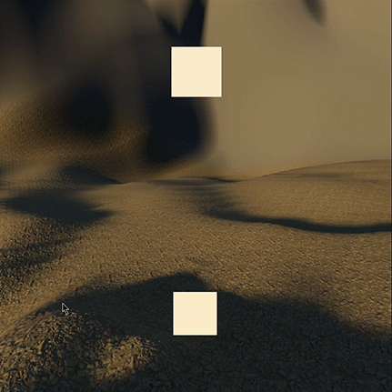 | |
| Gravity Scale = 1 | |
Although this looks very simple, we’ve already created the basis of effects like waterfalls, sparks, or leaves falling to the ground.
If we make Gravity Scale a negative number though, we can create things like smoke, where gravity pushes lighter-than-air particles upward.
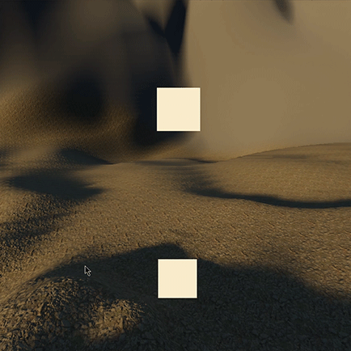 | 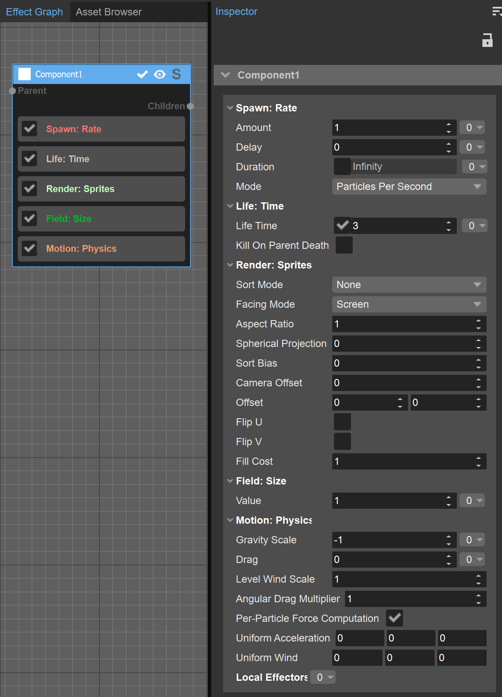 |
| Gravity Scale = -1 | |
Understanding Drag
Before we can talk about these other options for moving a particle with wind and Uniform Acceleration, we need to understand a key concept in particle design, which is a property called Drag. Since CRYENGINE simulates Earth conditions, it models Earth’s gravity and the atmosphere, and the air resistance of physical entities moving through it.
It’s air resistance that prevents an object falling to Earth from continuing to accelerate until it lands. When it comes to particles, this Drag value determines how much particles are affected by air. And with respect to particles in the Engine, that can either be air that isn’t moving or wind. In either case, enabling Drag means that eventually the particle is going to end up moving at the same speed as the air, whether it’s ten meters per second or perfectly still.
Let’s break it down: 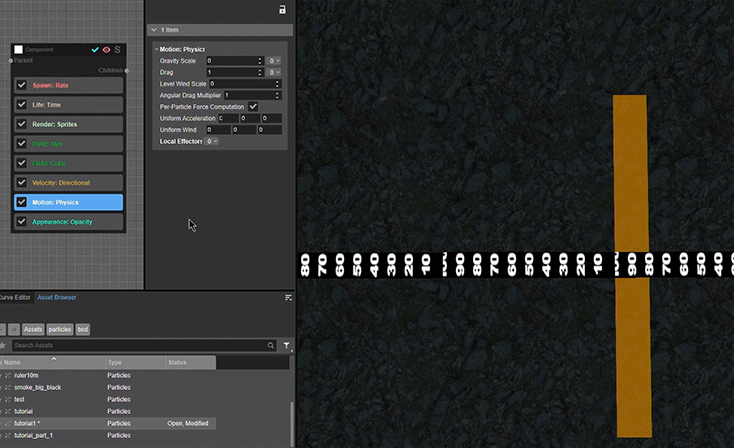
Motion:Physics → Drag = 1
We’re looking at a ruler that’s marked in centimeters. The yellow line is a particle sprite that is launched using a Velocity:Directional Feature because it allows us to launch a particle into motion at a precise starting velocity, in this case 1 meter per second on the X axis.
Then, in the Motion:Physics Feature, we've set Drag to 1 to demonstrate that a particle initially moving at one meter per second and will come to a stop after exactly one meter of travel.
If we double the Velocity value to 2 meters per second, Drag will stop the particle after two meters of travel. A value of 5 means that the particle stops after five meters of travel, etcetera.
If we go back to Velocity and set Drag to 0.5, it takes a lot longer for the particle to stop moving, but it still stops after the same one meter distance. 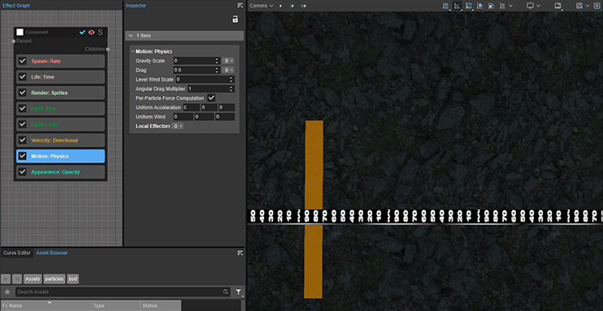
Motion:Physics → Drag = 0.5
So again, Drag enables air resistance for particles. In this case, it eventually stops the particles from moving because the Engine is modeling air that isn’t moving, and that air drags the moving particles down to its speed: zero.
But what if the air is moving?
To be able to observe this;
- Disable the Velocity:Directional Feature,
- Set Drag back to 0 in the Motion:Physics Feature
- Add a constant wind force by setting the X value of Uniform Wind to 1 meter per second.
As you will see, the particle won't move without Drag enabled, because the particle effectively has no air resistance, and the wind has no physical effect on the particle until you have a positive Drag value.
So what’s going to happen when Drag is set to 1?
In this case, the particle is spawned without any velocity, and immediately the one meter per second wind begins pushing it. And with these values, the particle will accelerate until it matches the wind speed, which will happen after a travel distance of one meter.
This may be a bit easier to see if you make the wind move a bit faster. You can see the particle below accelerating quickly until it’s moving at the speed of the wind:
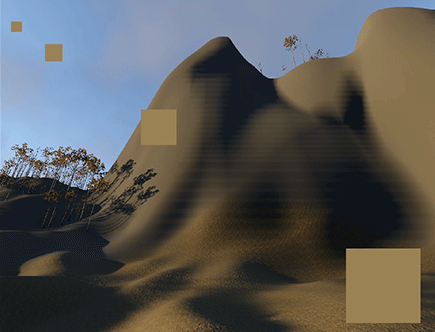
Particles influenced by Uniform Wind
Another way of saying this is that Drag eventually causes the particle to stop moving relative to the wind speed. Whether it's air that's moving or not moving, Drag allows the force of the wind to act on the particles, accelerating or decelerating the particles until they are moving at the same speed as the air (or coming to a stop if the air isn't moving).
Level Wind Scale
Now set Uniform Wind back to 0, and Level Wind Scale to 1 in Motion:Physics.
This will allow the global wind speed as set in your environment preset to affect the particle. At a Level Wind Scale value of 1, the global wind affects particles 100%, so with a Drag value of 1, the particles will reach the same speed as the global wind after one meter of travel.
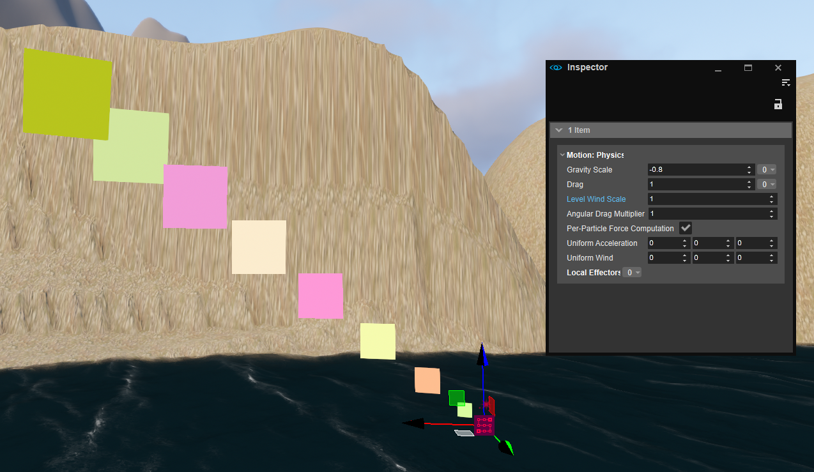
A level wind of 10m/sec in an X direction pushing particles in a positive direction on the X axis as gravity pushes them upward
When we launched our particle with a one-time push of one meter per second, Drag stopped the particle, since the air was motionless. With wind, it also “stops” it - relative to the wind speed. Ultimately, it’s doing the same thing; all we’re changing is the speed of the wind that’s pushing the particle.
Of course, you can combine these things:
- Launch the particle with a 5 meter per second push from Velocity:Directional,
- Set Drag to 1,
- Enable Level Wind Scale.
So in this case, Drag decelerates the particle from its initial velocity of 5 meters per second down to the global wind speed of one meter per second. Of course, you can also set Level Wind Scale higher than one; it just acts as a multiplier for the global wind speed.
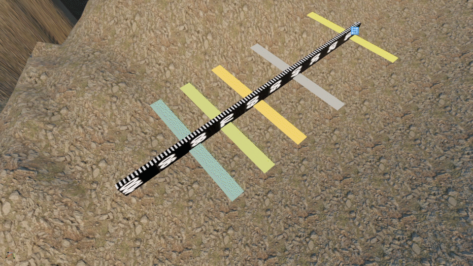 | 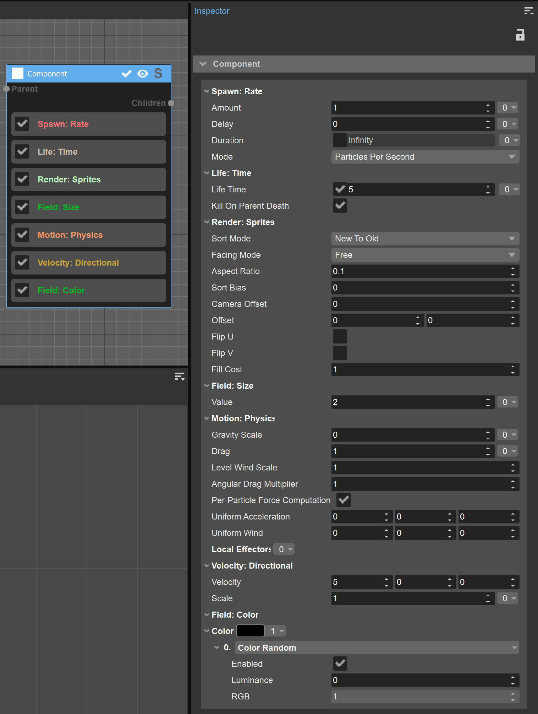 |
| Drag decelerating particles from an initial velocity of 5 meters per second (via Velocity:Directional) to the global wind speed of one meter per second (via Level Wind Scale and Drag) | |
| 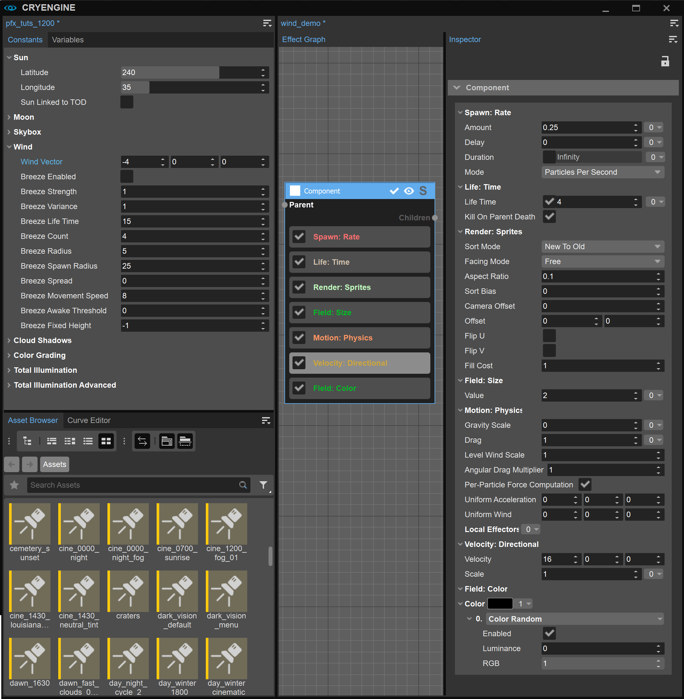 |
| In this example, the sprite's initial velocity (via Velocity:Directional) of 15 m/sec on the X axis is decelerated by drag and then accelerated by the global wind until it matches its velocity of 4 m/sec in the opposite direction (set in the environment preset's Constants → Wind → X velocity). | |

Affecting Particles With Breezes
If you check the Breeze Enabled checkbox in the Wind section of the Environment Editor to enable it in your environment preset, breezes will also affect any particles with Drag and Level Wind Scale enabled. If you turn on the Overlay Collision Proxies view mode in the Sandbox Editor's View Modes Toolbar, you can see the breezes represented as red boxes and watch them affecting the particles that they touch:
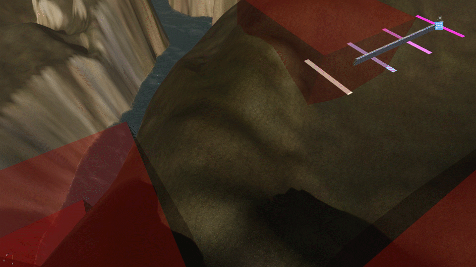
Particles influenced by breeze
The example below uses one of the old first generation explosion effects placed it to the left of the particle. The Force Generation property in the Advanced section of the DataBase View was enabled to produce a wind force.
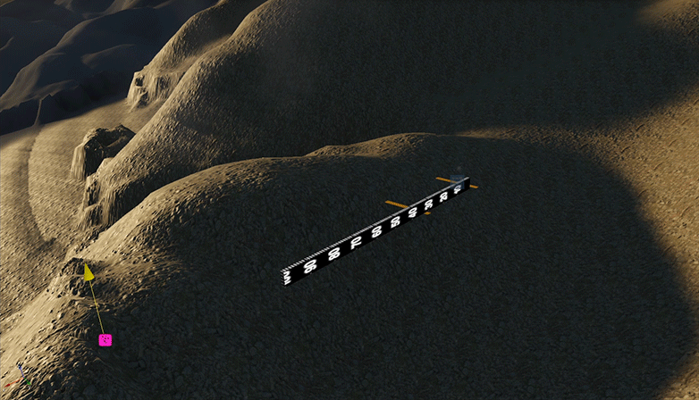
Particles influenced by an explosion's force
The global wind is pushing the particles to the left at the speed of the global wind, which is one meter per second; but when the explosion is triggered, the force pushes those particles rapidly in the other direction.
So that’s a great way to keep particles behaving realistically in response to anything that affects the global wind. Just keep in mind that if you make changes to your environment preset’s wind or breezes settings, every single instance of particles with Level Wind Scale enabled will be affected.
You can also accomplish the same kind of motion but in every possible direction using the Motion:Physics → Uniform Acceleration parameters on X, Y, and Z. This provides separate control within every particle effect that isn't affected by changes to the global wind, which may be easier to track throughout your level design.
\ 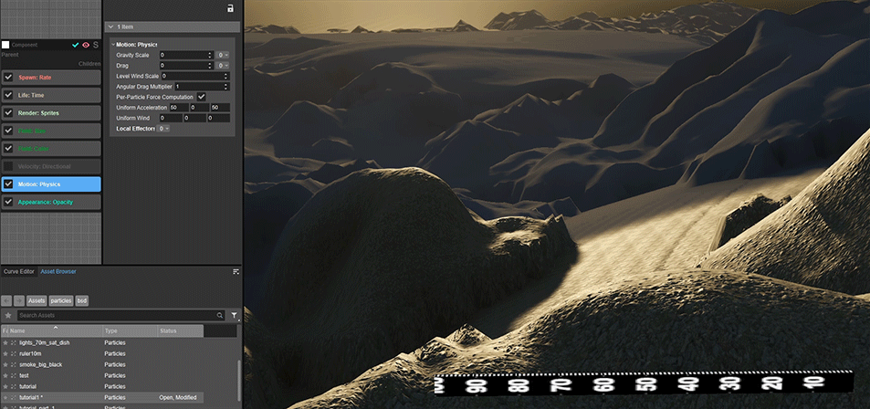
Uniform Acceleration in action
Or you can let the global wind from your environment preset do the pushing by setting Motion:Physics→ Level Wind Scale to greater than 0. That insures that your particle will always move in response to any changes in the global wind.
You also have the option to create your own wind just for this particle using the Motion:Physics → Uniform Wind values. We're going to set the Level Wind Scale back to 0 and make our own little wind in the opposite direction.
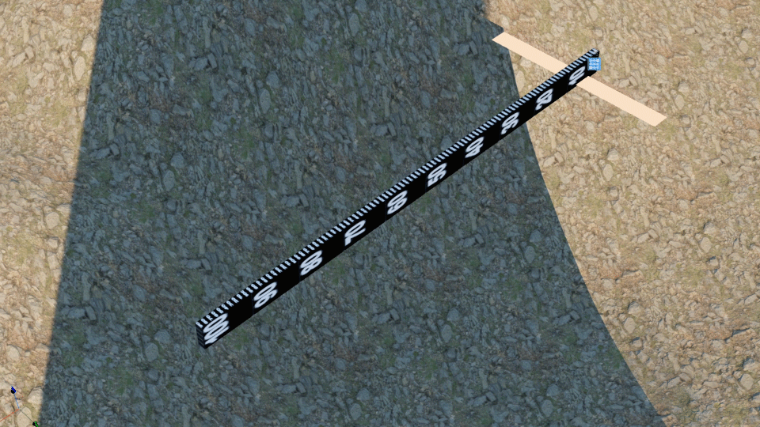 | 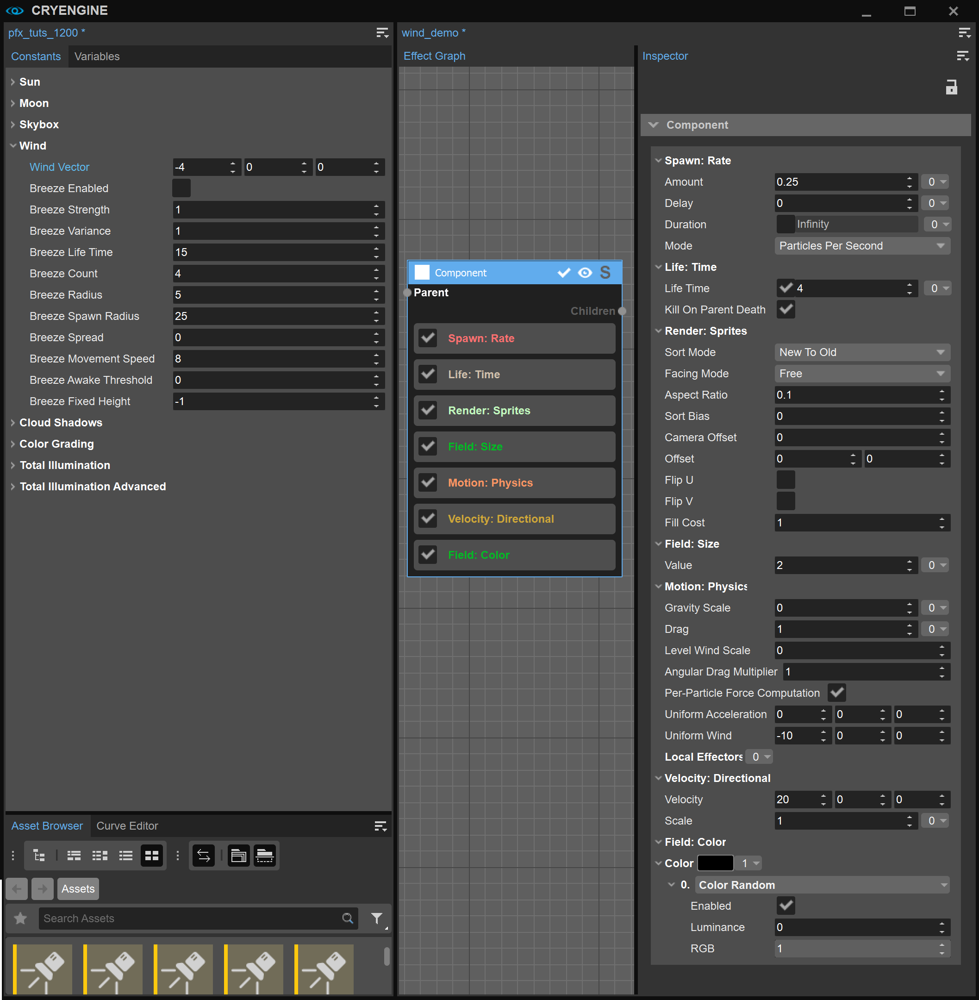 |
| The initial velocity (via Velocity:Directional) of 20 m/sec is decelerated by Drag and the Uniform Wind negative force, then accelerates in the opposite direction until it reaches the speed of the Uniform Wind (10 m/sec). | |
There are many, many ways to introduce movement into a particle and constrain it to boundaries or even geometry, but physics-driven motion is extremely useful.
Adding a Sprite Image
Let's use the earlier example of gravity causing a particle sprite to accelerate upward to build a smoke effect. Create or modify your particle effect using the Features and settings shown below. You can create an entirely new effect using the default Component.
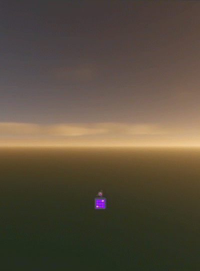 | 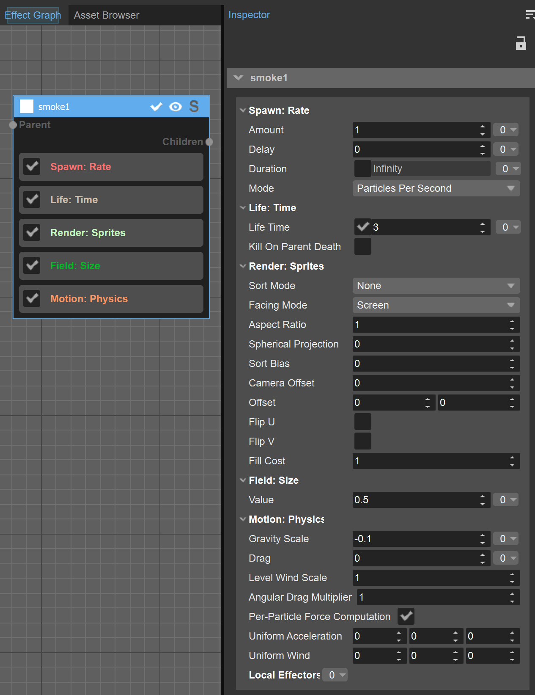 |
| Basis for smoke effect | |
Right now, our sprite is still just an ordinary rectangle. Let’s change that by right-clicking on any of the existing Features and inserting a new one: Appearance:Material. You’ll note that you can insert Features before or after where you click. Because Features are executed top to bottom, there will be cases where their order is going to make a difference, which will be explained further in this series.
Select your new Appearance:Material Feature and;
- Click on the
button next to the Texture field, - Select textures\sprites\smoke folder and choose smoke_a to replace the default sprite with a static puff of smoke image.
The textures and materials used in this tutorial are only available in the GameSDK Sample Project. For more information, please check out the Asset Database.
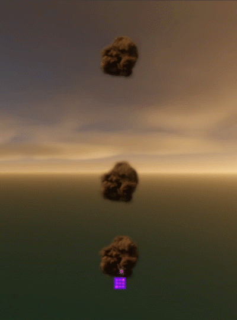 | 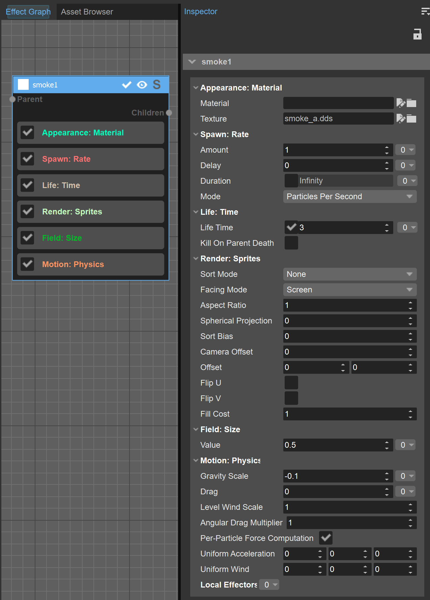 |
| Smoke effect with simple static texture applied to Appearance:Material | |
This is just a simple bitmap image generated by a simulation program. Now we finally have something that you might regard as a more realistic particle.
Modifying Size Dynamically
Even though it is an improvement for our particle effect, right now the smoke just appears and disappears instantly, and stays the same size. Let’s make it start small and gradually expand like real smoke.
To do so, we need to modify the Field:Size value over the age of the particle. If you click on the Field:Size Feature, you’ll see the 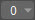 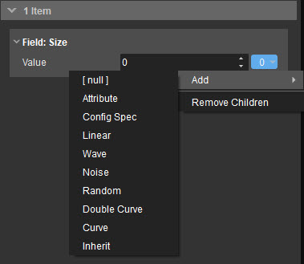
Adding Modifiers
Since we effectively want to change the size of the particle from small to large over time, we're going to use the Curve Modifier.
The Curve Modifier
First, make sure the Curve Editor panel is visible. If it's not, you can open it by clicking the
After that, add the Curve Modifier to the Value property of Field:Size. When you click on the Curve property that appears in the Inspector panel, you'll see a very flat curve in the Curve Editor, and you'll notice that the vertical axis is labeled with simple values, with 1 in the middle. 1 means 100% of whatever we’ve set in Field:Size → Value in the first place. Points that we place along the curve can modify the size over the horizontal axis. By default, that’s Age, the entire onscreen appearance of the particle.
Now, to make the smoke grow steadily from nothing, drag the start point down to 0, and the end point up to 2, or 200%. The smoke now begins as a point and grows to 200% of its original Field:Size.
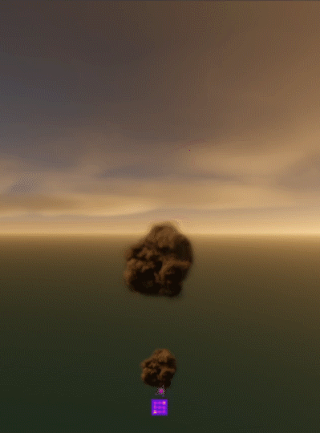 | 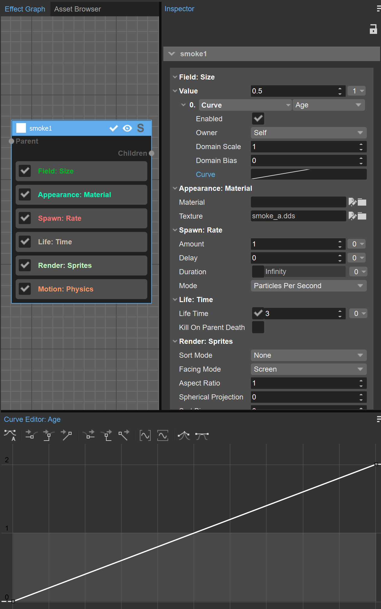 |
| Smoke effect with dynamic size applied to static texture | |
You can use the scroll wheel to zoom out on the graph and drag these points to any value you like.
You’ll notice that the horizontal axis has no specific values at all. That’s because it’s always normalized. It’s not a specific period of time; it’s dynamically linked to Life:Time. It’s called Age to distinguish it from Life:Time, which is an exact duration in seconds.
"Normalized" means that Age is always a dynamic, abstract representation of the entire lifetime of the particle. The advantage of using abstracted, normalized values is that if you change the Life:Time value of the particle, these points automatically redistribute themselves along the full length of the horizontal axis.
Randomizing Particle Size - the Random Modifier
Now smoke grows a bit more realistically, but each puff of smoke looks exactly the same. Let's randomize the size a bit.
To do so, click
We can randomize up to 2, or 200%, of the original size. For now;
- Set Random → Amount to 1,
- Drag the starting size up to about 0.2 or 20% rather than starting from nothing,
- Adjust Spawn:Rate to 10 to make the puffs of smoke continuous,
- And lengthen Life:Time to 8 seconds.
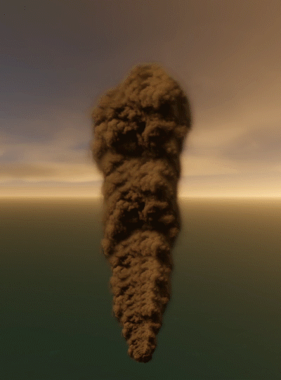 | 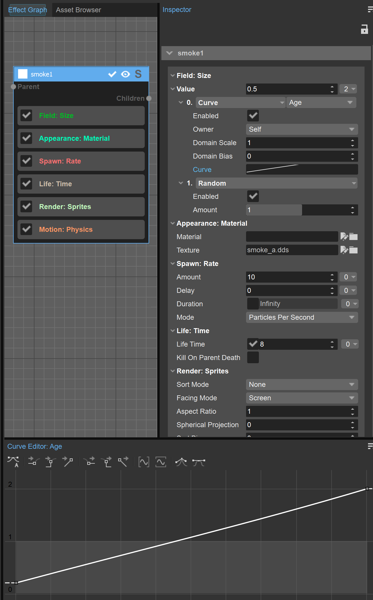 |
| Smoke effect with dynamic size, lengthened Life:Time and higher Spawn:Rate | |
Appearance:Opacity - Making the Smoke Disappear Smoothly
Getting better, but the smoke still disappears instantly at the end of its lifetime. Let’s use the same curve technique to fade opacity in and out:
- Right-click and add an Appearance:Opacity Feature,
- Right now the opacity is 1, or 100%. Click the
dropdown button and add a Curve Modifier, - Click on the Curve parameter to open it in the Curve Editor,
- We want a quick fade in at the beginning and a slow fade out at the end. So double click on the curve to add a point about 10% of the way into the timeline and another point about 30% from the start,
- Leave those at 100% opacity and drag the start and end points down to zero - you can drag the mouse to select both points and then move them simultaneously.
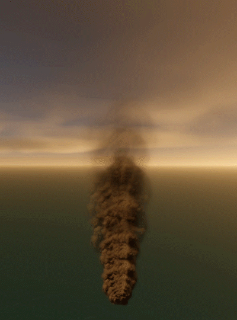 | 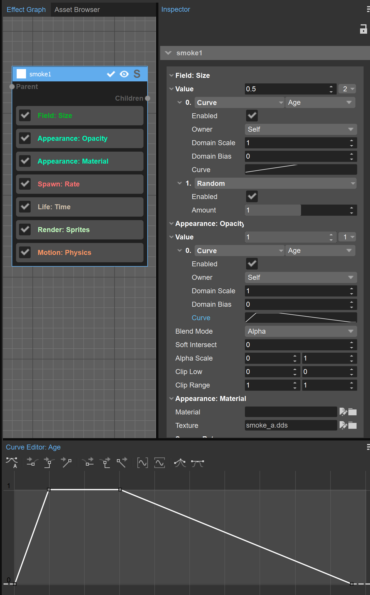 |
| Smoke effect with variable opacity | |
You’ll notice that in the Curve Editor, as with all spline-based points, there are handles to control the curvature. If you select a key, the toolbar above the grid lets you set the incoming and outgoing tangents as curves, as straight incoming or outgoing lines, and more.
Since you don't need the opacity level to curve above 100%, click the Set In Tangent to Linear button in the Curve Editor's Toolbar to straighten the incoming curve on the third point.
We've made a lot of changes, so press Ctrl + S to save the edits to the particle.
Appearance:Material - Using an Animated Sprite Sheet
You can continue to improve this by using the Curve and Random Modifiers to vary the size and speed of the sprite. But at the moment, we just have one static image for our smoke. We need what’s commonly known as a sprite sheet, a grid of images that contain an animated image sequence, to make the particle effect more realistic;
- Go back to the Appearance:Material Feature, delete the static texture you were using, and browse for a material. For this tutorial, we're going to use the materials/particles/smoke/smoke_plume_b_9x9.mtl texture. Even if the thumbnail is missing, the filename alerts you that this is a 9x9 sprite sheet - a recommended filename strategy - which is why we literally see a grid of nine by nine images spawning as a single image,
- To tell the particle editor to treat it as a multi-image sprite sheet and just show one tile at a time, we need to add an Appearance:TextureTiling Feature,
- Since this is a nine by nine image grid, set the TilesX and Y to 9, and also specify the total number of sprites in Tile Count,
- We also need to specify the same value in the Animation → Frame Count property,
- Lastly, we will tell the animation to loop repeatedly in the Cycle Mode, and enable Frame Blending to keep this looking smooth.
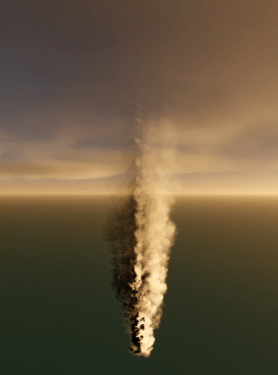 | 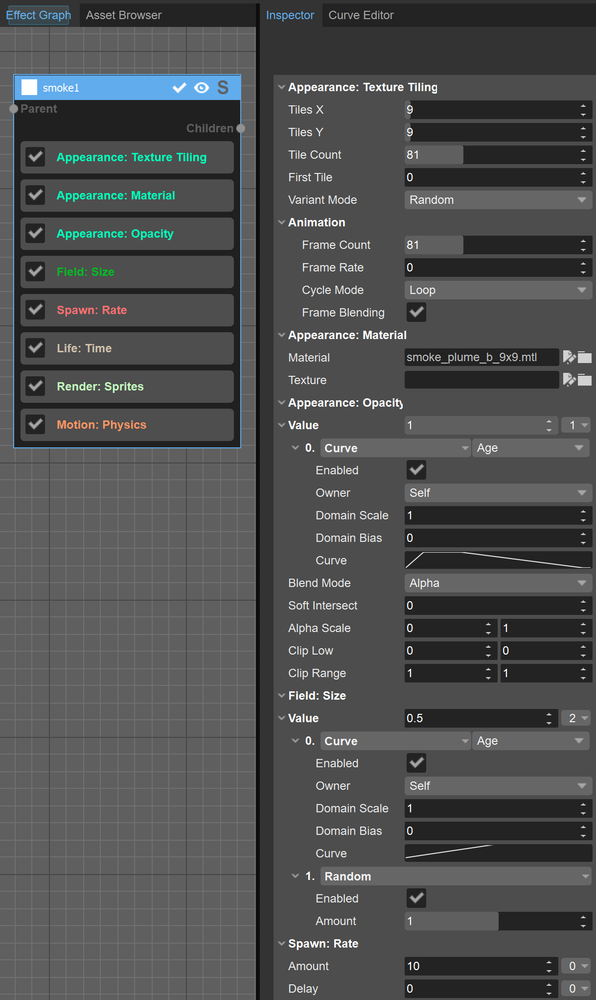 |
| Smoke effect using animated sprite sheet | |
This is a big improvement over our single static image. However, the same animation is spawning over and over again; we’re only randomizing the size. Let’s add some random rotation too:
- Use the Angles:Rotate2D Feature; we don’t need 3D rotation in this case,
- Random Angle will set the maximum randomization in degrees as each sprite spawns,
- If you want the particle to spin over the course of its lifetime, you can add Random Spin,
Try adjusting Spawn:Rate until you get the smoke effect you want.
Here, we've set it to 3 particles per second:
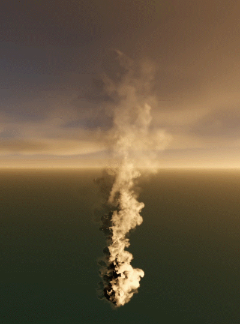 | 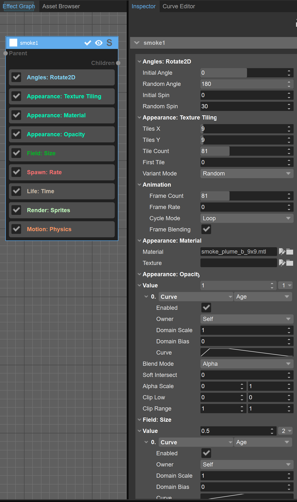 |
| Smoke with random rotation and spin and a Spawn:Rate of 3 | |
Field:Color - Modifying the Sprite Color
The last thing you need to do is very simple: to make this sprite a more consistent dark color, add a Field:Color Feature to the Component. You can go crazy here, for instance you can make colored smoke, but in this case, we just want to make the smoke color close to black.
Here, we've used a value of 3 with no saturation:
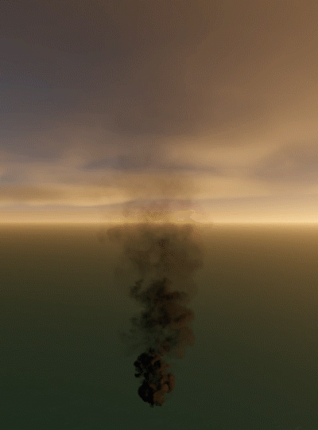 | 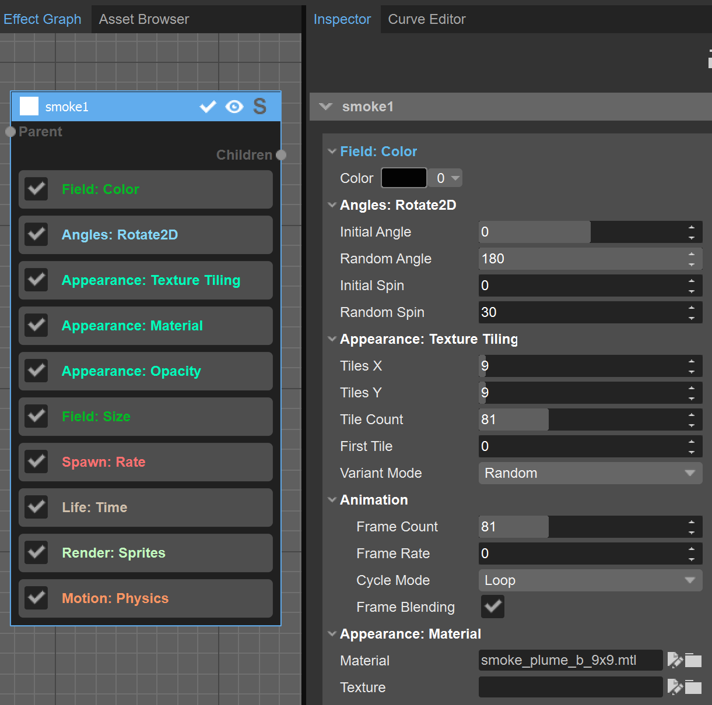 |
| Smoke with Field:Color set close to black | |
Color Random Modifier
You shouldn’t be surprised to see that you can add Modifiers to the Field:Color Feature just like some other properties. For example, you could add a Color Random Modifier and have it change color up to 100% through the RGB parameter, and also have separate control over the random variations in Luminance.
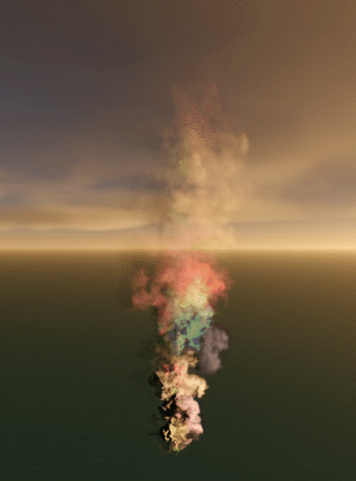 | 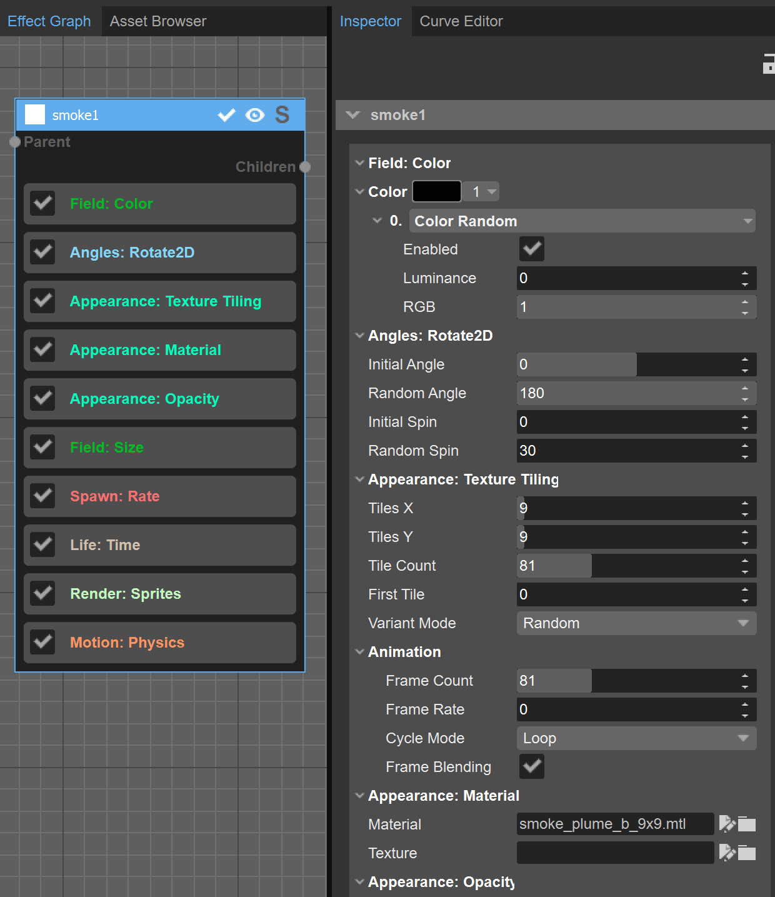 |
| Smoke with randomized Field:Color | |
Summary
There are lots of other improvements that we can and should make to get this smoke effect to look flawless, but they have more to do with studying how real smoke behaves in specific situations rather than unfamiliar Particle Editor Features. And we covered a lot of ground in this first part of the series and established the building blocks that we’ll expand on as we build more and more complex particle effects.
Video Tutorial
You can also follow this tutorial series in video form on our YouTube channel.